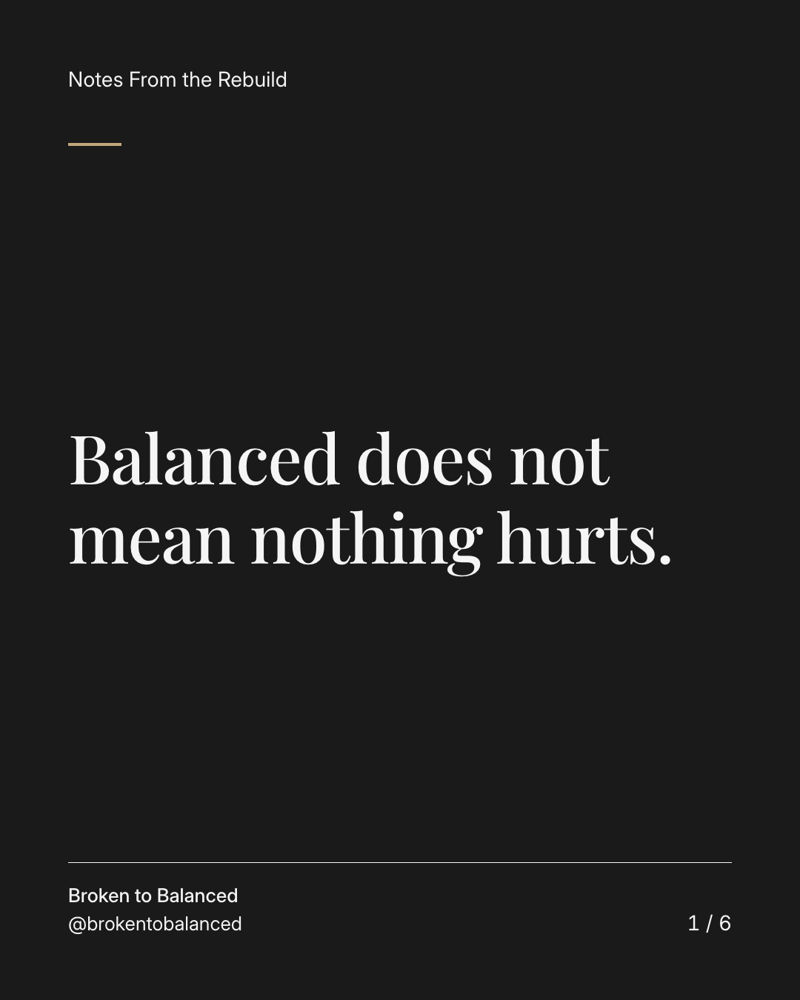
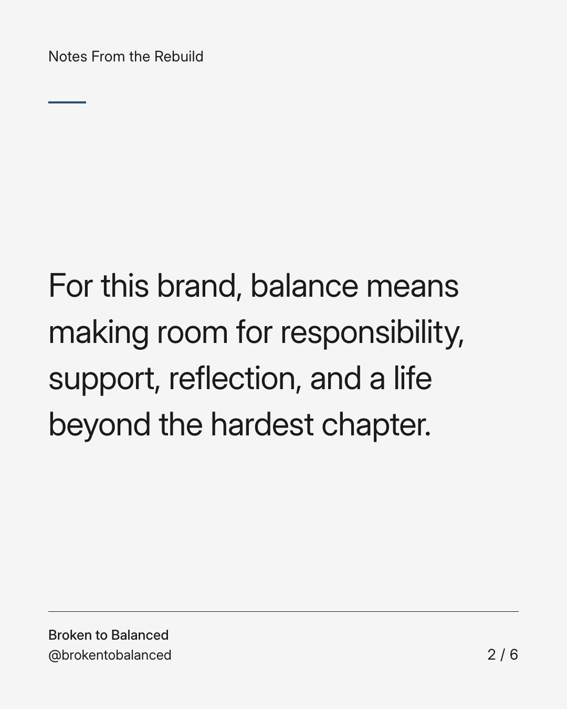
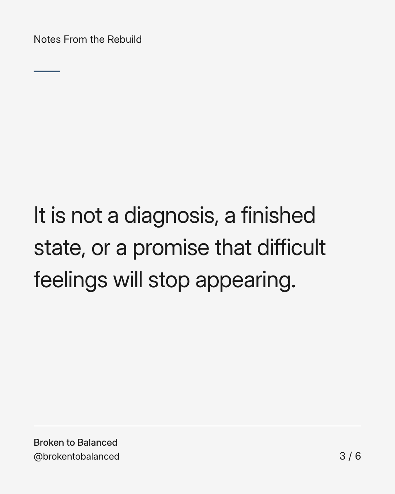
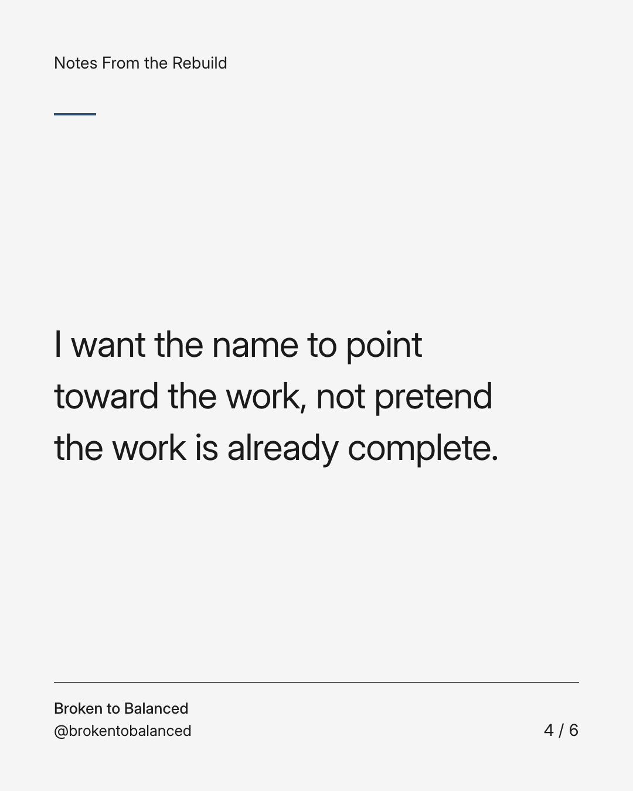
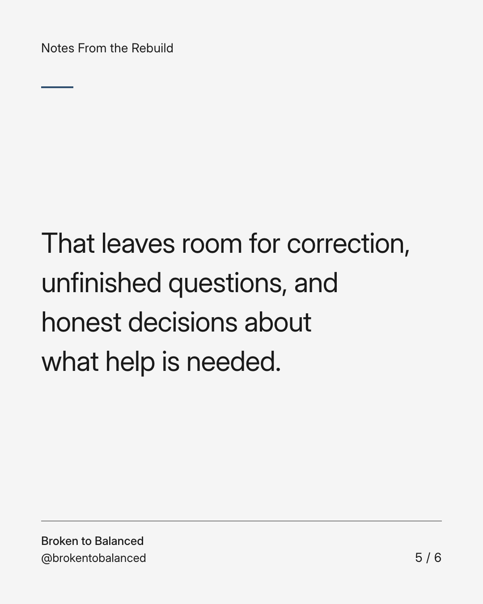
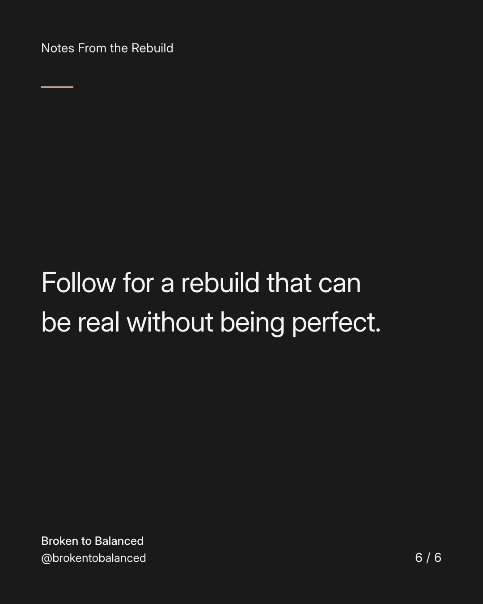

Exact text and accessibility text
Balanced does not mean nothing hurts.
Slide 1 of 6. Balanced does not mean nothing hurts.


Exact text and accessibility text
For this brand, balance means making room for responsibility, support, reflection, and a life beyond the hardest chapter.
Slide 2 of 6. For this brand, balance means making room for responsibility, support, reflection, and a life beyond the hardest chapter.


Exact text and accessibility text
It is not a diagnosis, a finished state, or a promise that difficult feelings will stop appearing.
Slide 3 of 6. It is not a diagnosis, a finished state, or a promise that difficult feelings will stop appearing.


Exact text and accessibility text
I want the name to point toward the work, not pretend the work is already complete.
Slide 4 of 6. I want the name to point toward the work, not pretend the work is already complete.


Exact text and accessibility text
That leaves room for correction, unfinished questions, and honest decisions about what help is needed.
Slide 5 of 6. That leaves room for correction, unfinished questions, and honest decisions about what help is needed.


Exact text and accessibility text
Follow for a rebuild that can be real without being perfect.
Slide 6 of 6. Follow for a rebuild that can be real without being perfect.
Exact caption
Plain-text fallback: select and copy the caption.